MARKETING
Communication Message and Objectives
Reach Objective
“To reach 100 followers on either Instagram and TikTok by 10th of April 2022.”
Affect Objective
“To make 100 Instagram users feel related to our brand after they see our message by 10th of April 2022.”
Response Objective
“To get 250 Instagram user swipe up on Instagram Story paid advertisement to visit our website by 10th of April 2022.”
Target Audience
Females from the generation-z aged 18-24 and living in the Netherlands.
Which platforms/social media do they use?
Instagram and TikTok
How much do they use it?
Frequently. Several times a day.
What is their activity on social media platforms?
Watching Instagram stories mainly, sometimes reels. Scrolling through “For You” page on TikTok.
At what times does your target audience visit social media platforms/websites?
Mostly in the morning and in the evening
What other brands do they like?
Apple, Converse, Spotify and Rituals.
How should you position your message?
Although there are other brands with the same values, our brand offers great quality perfume that is long-lasting and affordable.
What do you want to communicate?
When you use our products, you'll feel confident, not bothered by anyone and on top of the world!
What is their online and offline behaviour when it comes to media?
Social media is their most frequent source of media (almost the only one). They use it for entertainment as well as a source of information.
Media Tactics
We will use two different social media platforms: Instagram and TikTok.
These two platforms are most common to use by our target group. These two platforms clearly dominate the others, that is why we decided to put our focus on them and only them.
Achieving objectives:
We will record a video campaign with young Dutch females for either Instagram and Tiktok. It will consist of one main video presenting shortcuts and several videos presenting persons separately. They will be explaining what being authentic and true to themselves means for them.
We will post stories including questionnaires and polls on stories to get an interaction from the followers. The add on stories will contain our main video campaigns or special graphics that include our message and call to action. The main video will be posted on reels, as well as the videos presenting persons separately.
TikTok
On Tik Tok we would like to create brand awareness by creating videos that represent our values.
Planning
Content calendar with an overview of when and what we will communicate on which platform.
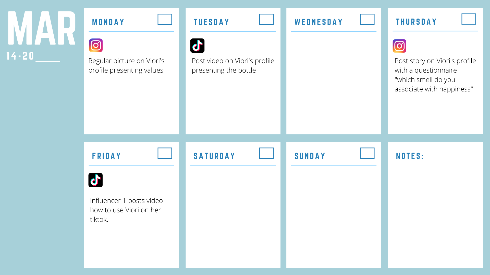 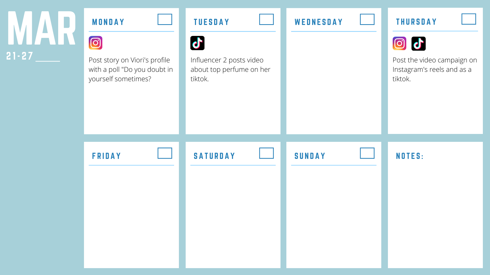 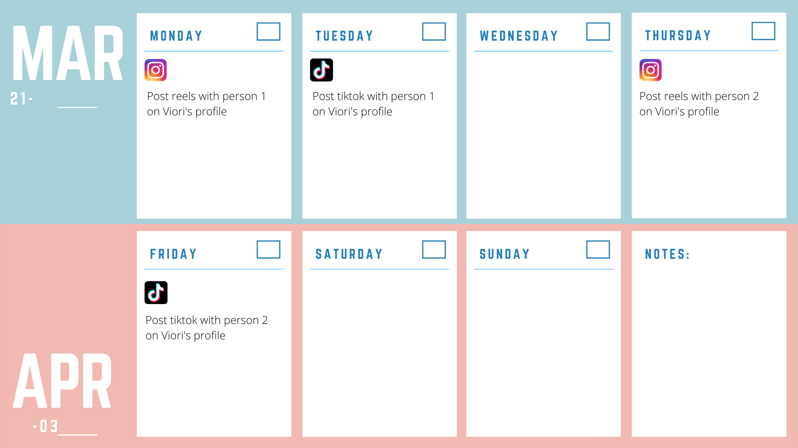 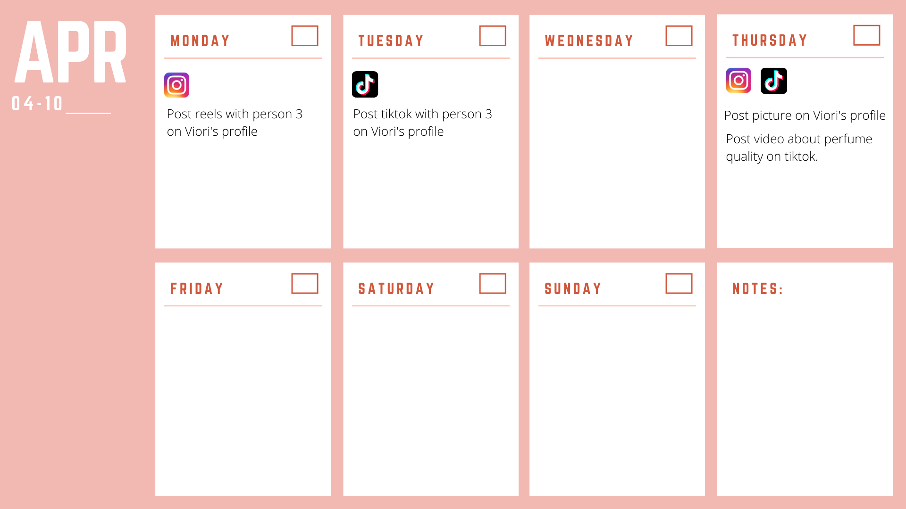Learning Points
In the beginning of the project we wrote our Communication & Media Plan for Marketing in a way where our social media planning included posts and videos that are made by influencers. However, as the project continued, we realised that it wouldn’t work out - having famous influencers on our social media accounts was not a realistic goal considering our current abilities. Therefore, we changed our strategy and made video content using our friends and people we know instead, as they are also capable of creating content that will show what our brand stands for. This is a valuable learning point for us, as it is always nice to dream big, but sometimes it doesn’t work out as expected and it is necessary to take a step back and change your plan of action to make it more realistic. We have learned our lesson, and if this project was longer, we would continue to make content using people that we know, which is more attainable than getting famous influencers to produce content for us.
Future Planning
Additionally, our Reach Objective was to reach 100 followers on Instagram and TikTok by 10th of April 2022. However, as the project is coming to an end, we have a total of 82 followers across both social media platforms, which means we didn’t achieve our goal. This could be another learning point for us. If this project would continue, or if we worked on similar projects in the future, we could share our social media accounts more or even focus on paid promotion to reach even more people. In addition, we made the accounts early on in the project, but it took us a while to start posting, as we were still busy making the social media content. Therefore, another option in future projects and another learning point would be to start posting content sooner. And if this project were to continue, we could stay consistent with posting our content from now on, and doing it frequently, to keep our followers active on our page and reach new people as well.
Professionalism
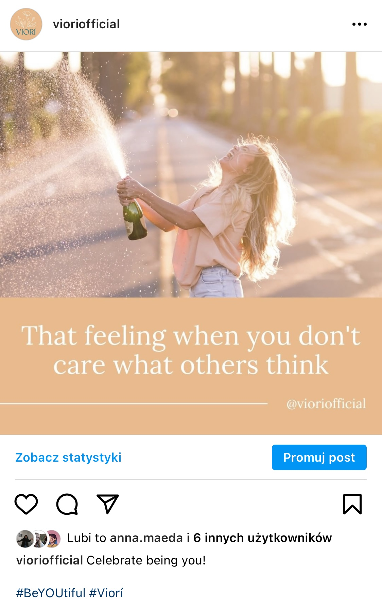 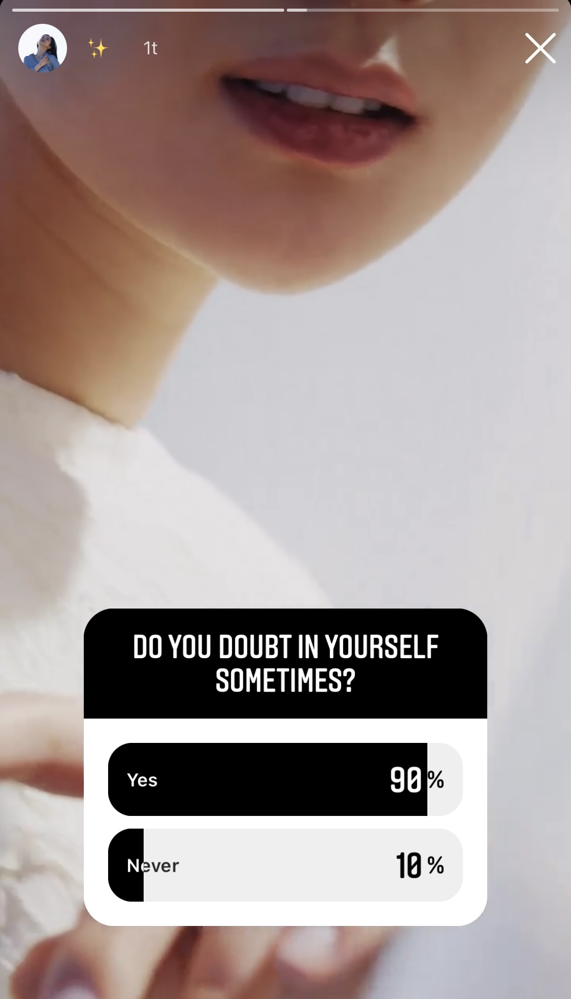 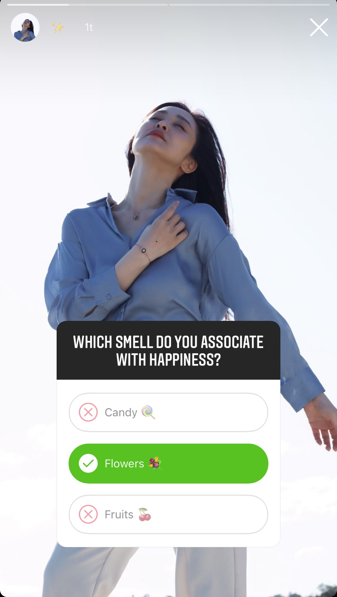 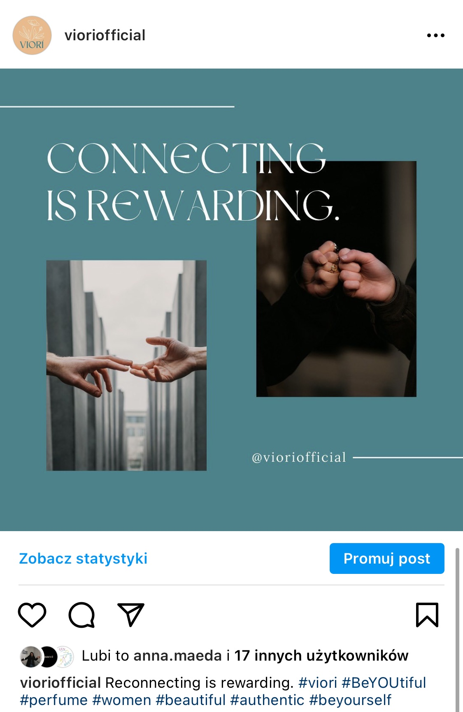 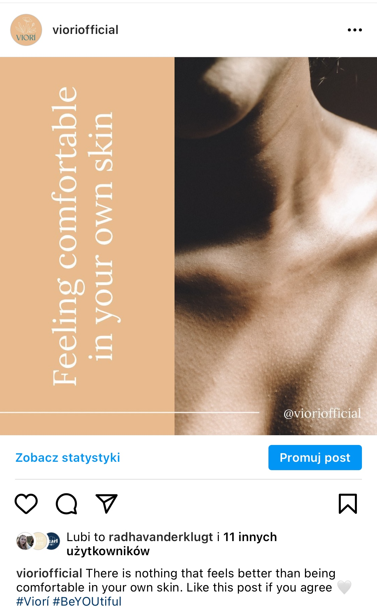 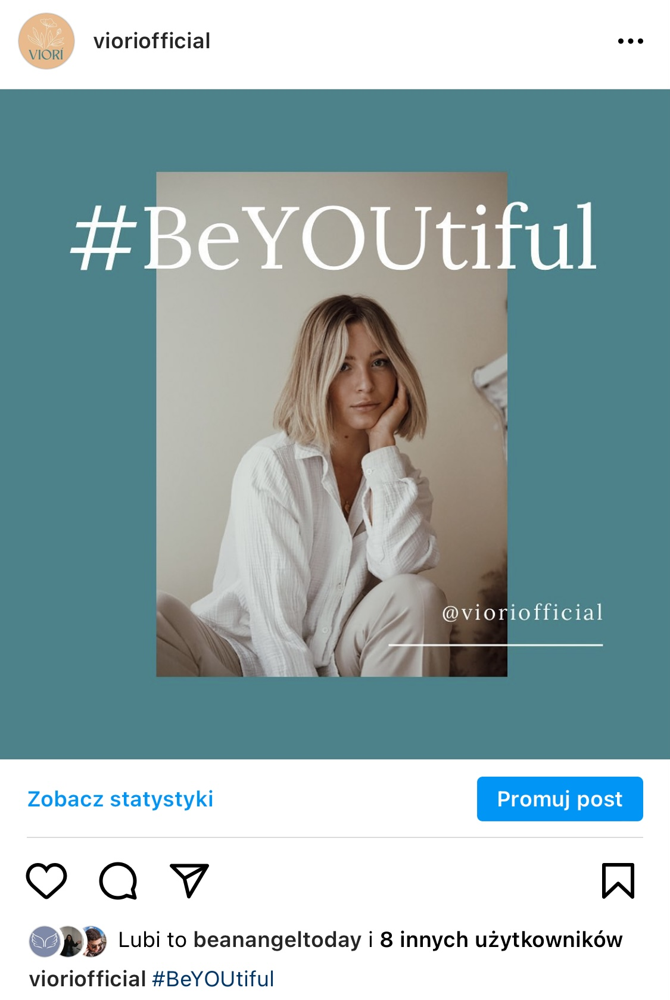 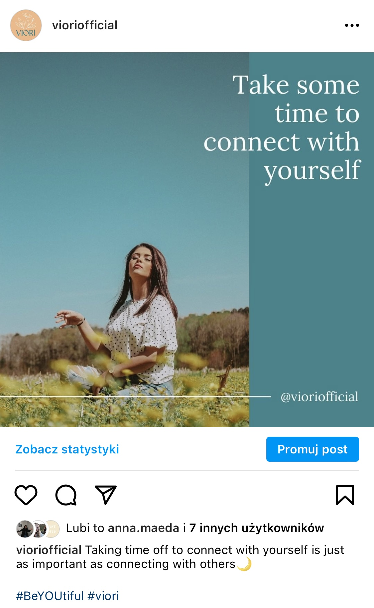


 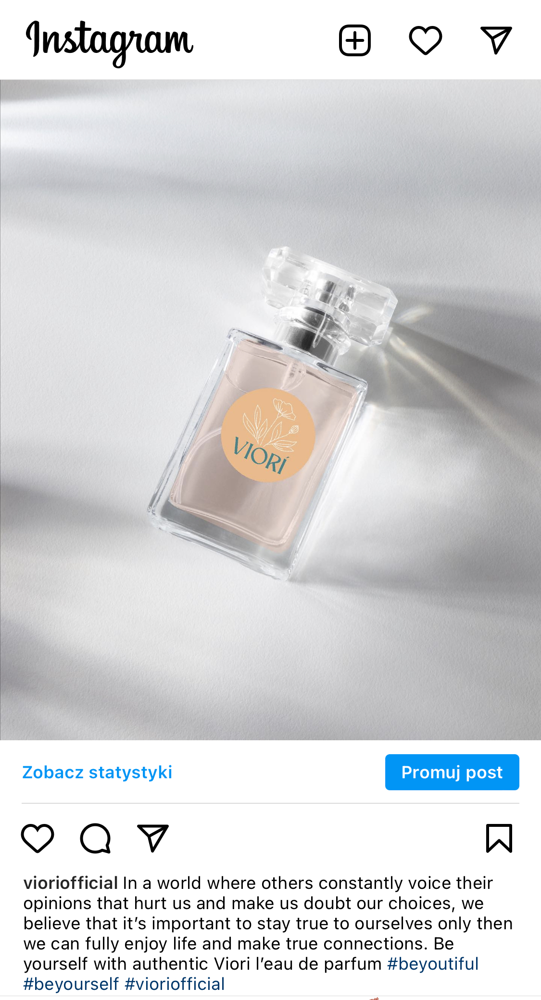
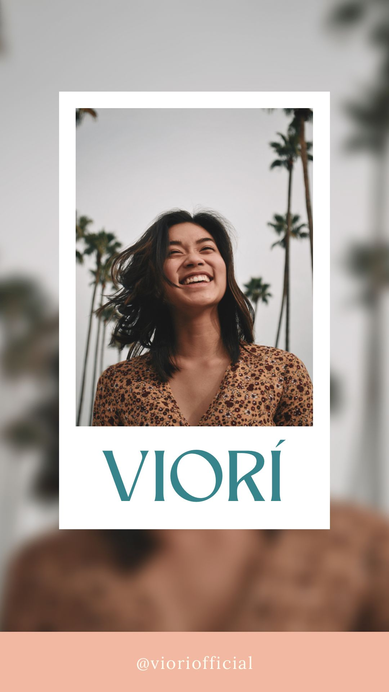
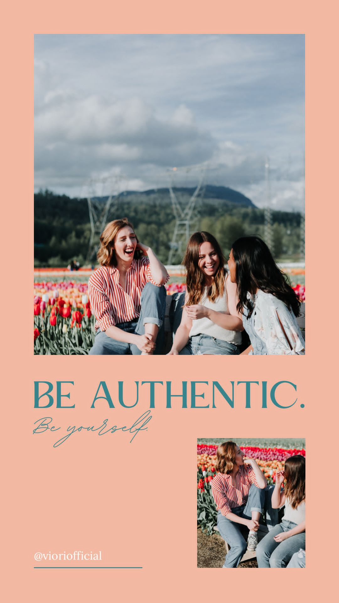
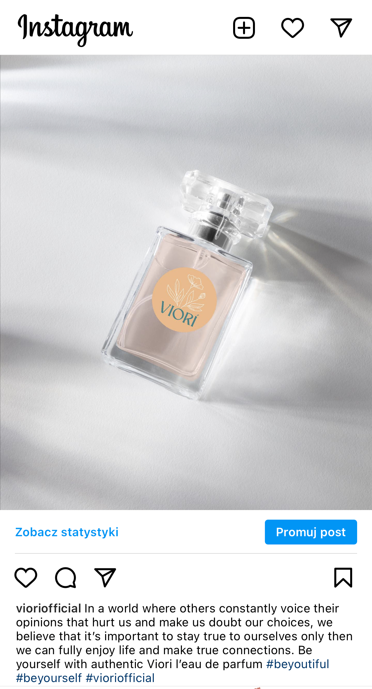
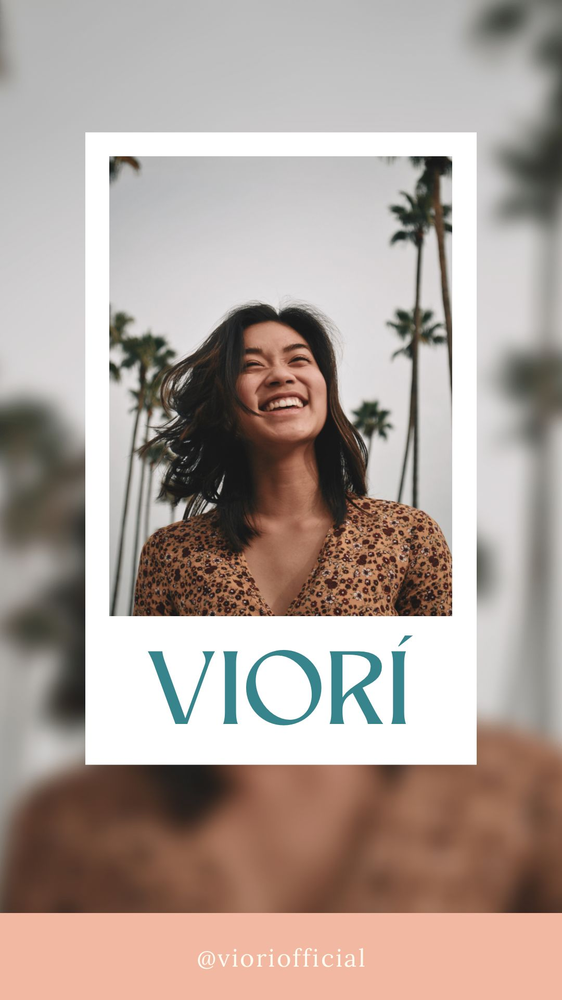
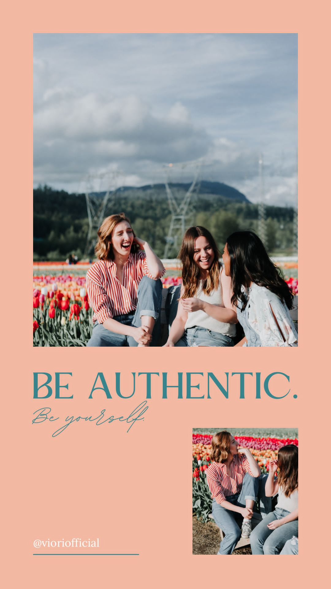